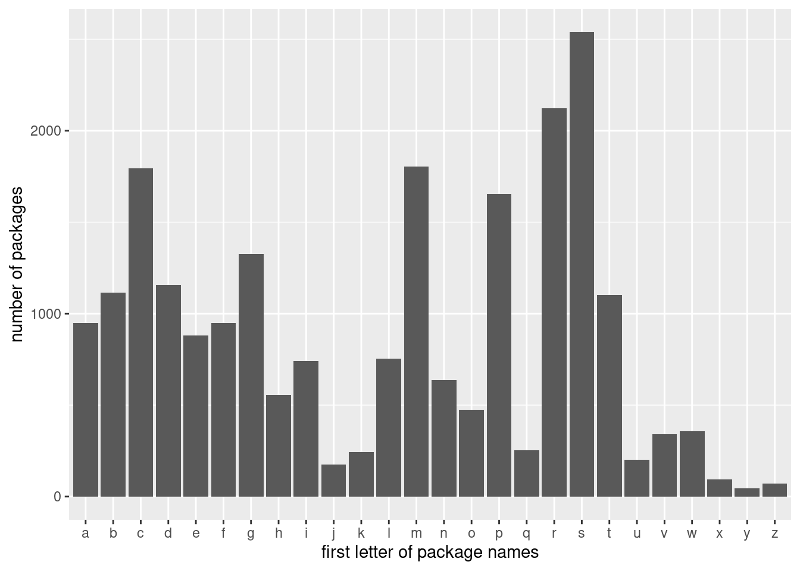

Web Scraping
Learning objectives
- Extract and process text data from web pages.
- Understand the basics of web scraping using the
rvestpackage. - Identify challenges associated with web scraping and data extraction.
Start your workflow by uploading the tidyverse package for data wrangling:
We will also use the rvest package so first install it:
Then load the package:
We will use different sources for web data so let’s just call them when we need them!
1. Web scraping data with code
With the rvest package, we can:
- Read HTML source code from a website.
- Break it into a nice structure.
- Extract the specific elements we want to analyze.
Let’s work with a simple example first, the countries of the world and read the HTML content of this page in R:
## {html_document}
## <html lang="en">
## [1] <head>\n<meta http-equiv="Content-Type" content="text/html; ...
## [2] <body>\n <nav id="site-nav"><div class="container">\n ...
## [3] <script src="https://ajax.googleapis.com/ajax/libs/jquery/1 ...
## [4] <script src="https://maxcdn.bootstrapcdn.com/bootstrap/3.3. ...
## [5] <script src="https://cdnjs.cloudflare.com/ajax/libs/pnotify ...
## [6] <link href="https://cdnjs.cloudflare.com/ajax/libs/pnotify/ ...
## [7] <script type="text/javascript">\n \n PNotify.prototyp ...
## [8] <script type="text/javascript">\n $("video").hover(funct ...
## [9] <script>\n (function(i,s,o,g,r,a,m){i['GoogleAnalyticsOb ...
## [10] <script>\n !function(f,b,e,v,n,t,s){if(f.fbq)return;n=f.fb ...
## [11] <noscript><img height="1" width="1" style="display:none" sr ...
## [12] <script type="text/javascript">\n /* <![CDATA[ */\n v ...
## [13] <script type="text/javascript" src="//www.googleadservices. ...
## [14] <noscript>\n <div style="display:inline;">\n <img hei ...
## [15] <script async src="https://www.googletagmanager.com/gtag/js ...
## [16] <script>\n window.dataLayer = window.dataLayer || [];\n ...b. Using element types
With a little more knowledge of HTML elements, we can extract specific data from web pages as well:
<p>for paragraphs<a href=...>for hyperlinks<img>for images<table>for tabular data
Let’s look at the webpage that lists all R packages on CRAN:
# Webpage with all R packages
read_html("https://cran.r-project.org/web/packages/available_packages_by_name.html")## {html_document}
## <html>
## [1] <head>\n<title>CRAN: Available Packages By Name</title>\n<li ...
## [2] <body lang="en">\n<div class="container">\n<h1>Available CRA ...All the names of the packages appear as links:
# Extract hyperlinks with "a"
read_html("https://cran.r-project.org/web/packages/available_packages_by_name.html") |>
html_elements("a")## {xml_nodeset (22364)}
## [1] <a href="#available-packages-A"><span class="CRAN">A</span> ...
## [2] <a href="#available-packages-B"><span class="CRAN">B</span> ...
## [3] <a href="#available-packages-C"><span class="CRAN">C</span> ...
## [4] <a href="#available-packages-D"><span class="CRAN">D</span> ...
## [5] <a href="#available-packages-E"><span class="CRAN">E</span> ...
## [6] <a href="#available-packages-F"><span class="CRAN">F</span> ...
## [7] <a href="#available-packages-G"><span class="CRAN">G</span> ...
## [8] <a href="#available-packages-H"><span class="CRAN">H</span> ...
## [9] <a href="#available-packages-I"><span class="CRAN">I</span> ...
## [10] <a href="#available-packages-J"><span class="CRAN">J</span> ...
## [11] <a href="#available-packages-K"><span class="CRAN">K</span> ...
## [12] <a href="#available-packages-L"><span class="CRAN">L</span> ...
## [13] <a href="#available-packages-M"><span class="CRAN">M</span> ...
## [14] <a href="#available-packages-N"><span class="CRAN">N</span> ...
## [15] <a href="#available-packages-O"><span class="CRAN">O</span> ...
## [16] <a href="#available-packages-P"><span class="CRAN">P</span> ...
## [17] <a href="#available-packages-Q"><span class="CRAN">Q</span> ...
## [18] <a href="#available-packages-R"><span class="CRAN">R</span> ...
## [19] <a href="#available-packages-S"><span class="CRAN">S</span> ...
## [20] <a href="#available-packages-T"><span class="CRAN">T</span> ...
## ...These are all hyperlinks! We can grab the hyperlinked text with html_text():
# Save the hyperlinked text
read_html("https://cran.r-project.org/web/packages/available_packages_by_name.html") |>
html_elements("a") |>
html_text(trim = TRUE)## [1] "A" "B" "C"
## [4] "D" "E" "F"
## [7] "G" "H" "I"
## [10] "J" "K" "L"
## [13] "M" "N" "O"
## [16] "P" "Q" "R"
## [19] "S" "T" "U"
## [22] "V" "W" "X"
## [25] "Y" "Z" "A3"
## [28] "AalenJohansen" "AATtools" "ABACUS"
## [31] "abasequence" "abbreviate" "abc"
## [34] "abc.data" "ABC.RAP" "ABCanalysis"
## [37] "abclass" "ABCoptim" "abcrf"
## [40] "abcrlda" "abctools" "abd"
## [43] "abdiv" "abe" "aberrance"
## [46] "abess" "abglasso" "ABHgenotypeR"
## [49] "abima" "abind"
## [ reached getOption("max.print") -- omitted 22314 entries ]Try it! Save the names of the packages in a dataframe and get rid of the first 26 observations that only refer to the 26 letters of the alphabet to search package names. Find how many packages start with the letters gg. Hint: recall str_detect() and Regex anchors. Then create a visualization to check what is the most common first letter for a package.
# Create data frame
r_packages <- data.frame(
"names" = read_html("https://cran.r-project.org/web/packages/available_packages_by_name.html") |>
html_elements("a") |>
html_text(trim = TRUE)) |>
# Get rid of the first 26 elements
filter(str_length(names) > 1)
# Find the number of packages that start with gg
r_packages |>
filter(str_detect(str_to_lower(names), "^gg")) |>
nrow()## [1] 233# Most common first letter for a package
r_packages |>
mutate(first_letter = str_extract(str_to_lower(names), "^.")) |>
# Create a bar graph for each letter
ggplot(aes(x = first_letter)) + geom_bar() +
labs(x = "first letter of package names", y = "number of packages")
Most R packages start with the letter S! Note: There are currently 1 packages. This number changes every semesters (and almost everyday)!
Let’s look at the first letter of each package and look at the distribution of each letter with a bar graph:
2. Web scraping and ethics
Web scraping can be a powerful tool for collecting data from the internet, but it also raises important ethical considerations. While publicly available data may seem free to use, scraping websites without permission can violate terms of service or privacy rights. Ethical web scraping involves respecting a website’s guidelines for automated access and ensuring that the collected data is used responsibly. When in doubt, seeking permission or using official APIs is a more ethical and sustainable approach to obtaining data.
Recommended Resources
- Worksheet keys are posted at the end of the week on Canvas under Programming Tools.
- Recommended readings: Web scraping
- Selector Gadget extension